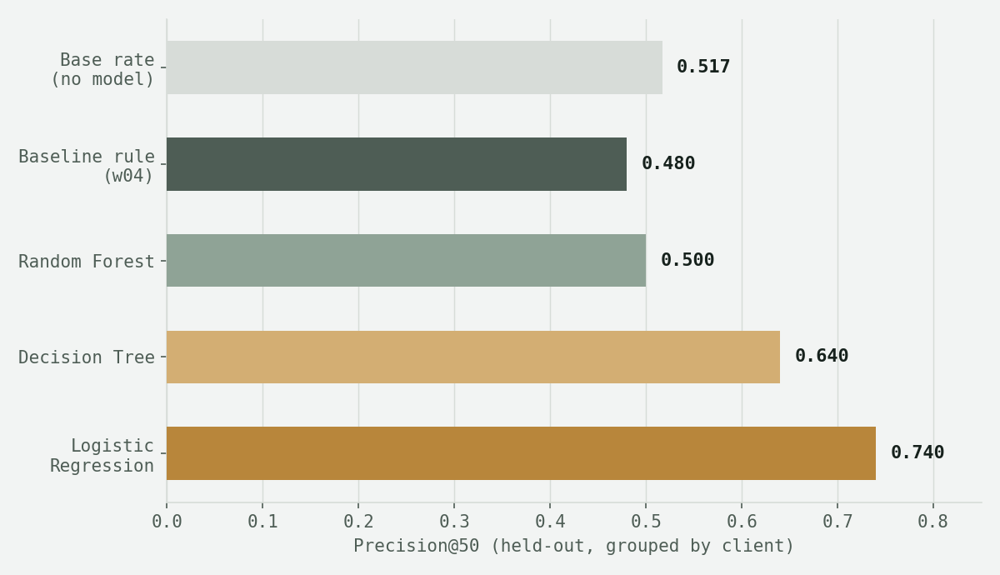
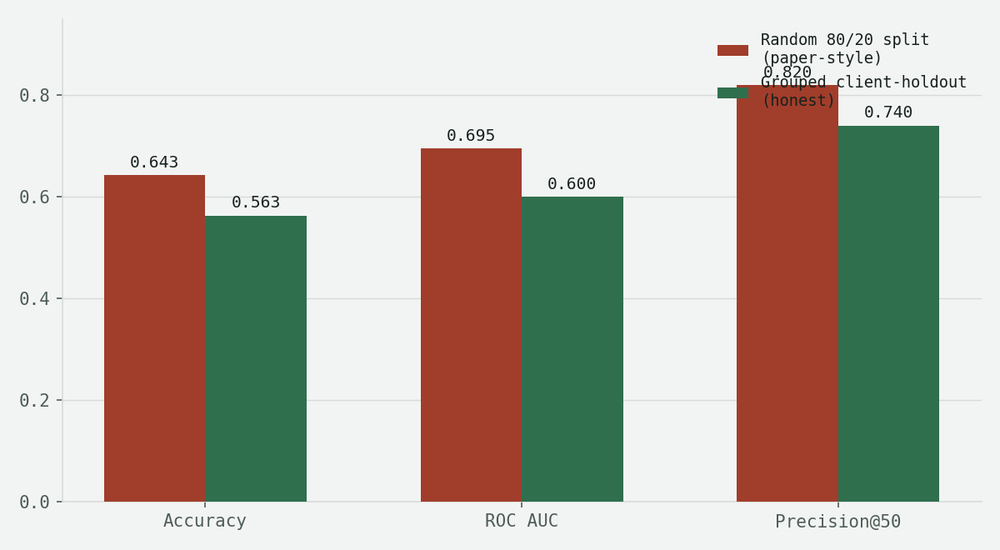
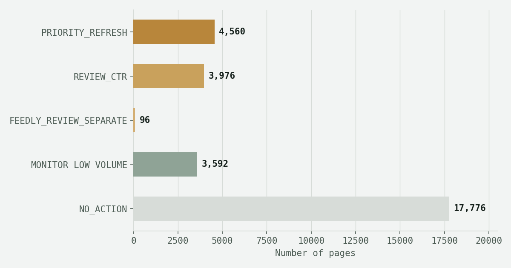

The queue is longer than the hours
A content team managing thousands of pages across dozens of client accounts cannot review every page every month. Someone has to decide which pages go into this week's refresh queue — and today, that decision is either a gut call or a rigid hand-written rule.
The unit of analysis here is a single page. The decision this work supports: which pages should a content strategist or SEO analyst spend their limited review hours on this cycle? A wrong call cuts two ways. A missed decliner (a false negative) keeps losing traffic quietly, a cost that's real but hard to see. A false alarm (a false positive) burns a scarce review hour on a page that didn't need it. Since review time is the constrained resource, this paper treats Precision@50 — of the top 50 pages ranked highest-priority, what fraction genuinely deserve review — as the metric that matches the actual decision, not overall accuracy across all 30,000 pages.
One snapshot, thirty thousand pages
This analysis uses the anonymized starter sample released for the FlyRank ML internship: 30,000 content pages across 32 of the warehouse's 104 total client accounts, one row per page, describing a single trailing 90-day window. The full internship warehouse (~79 million rows, hosted separately via Hugging Face) was not used here — extending these findings to that full release is future work, not a claim this paper makes.
Fields fall into four buckets: features (25 columns — traffic, engagement, position, content, and keyword-economics fields, all knowable before any outcome window), label (trend_direction/trend_pct, defining whether a page is "declining"), context (pseudonymous content_id/client_id, used only for grouping, never as model inputs), and excluded — 15 columns deliberately left out, most importantly the *_last_30d/*_prev_30d family, since the label is defined directly from a comparison of those two windows and including them would let a model reconstruct the label rather than learn a real pattern.
What counts as declining, and how it's checked
Target: a page is labeled "declining" when trend_direction == "down" — 54.2% of pages in this sample carry that label. This is an observed signal from the data, not a rule I invented.
Baseline: a transparent, hand-written rule — a page is worth reviewing if it ranks in a weak position (11th or worse) and has real search visibility (≥500 impressions in 90 days). No model, no training, fully auditable in one sentence.
Validation design: a grouped, client-holdout split (75/25 by client, not by row) — every page from a given client sits entirely on one side of the split. Splitting by row instead would let a model partly learn a client's own traffic quirks rather than a signal that generalizes to a client it has never seen.
Leakage check: the "attack your own model" test — refit the model with a suspect column added back in, and watch for a suspicious jump. Adding trend_pct (the label's own source) back in pushes ROC AUC from 0.608 to 0.999 — a textbook confession. Adding the last_30d/prev_30d window family back in pushes it to 0.756 — a real, smaller leak. Both confirm the exclusions above were correct, not just assumed.
Every model beats the rule — modestly, and on the same ground
All three candidate models were evaluated against the baseline rule on the identical held-out test rows — 7,115 pages from 8 client accounts none of the models saw during training.

| Model | Precision@50 | ROC AUC | Avg. precision |
|---|---|---|---|
| Base rate (test set) | 0.517 | — | — |
| Baseline rule (hand-written) | 0.480 | 0.486 | 0.507 |
| Random forest | 0.500 | 0.608 | 0.591 |
| Decision tree (depth 4) | 0.640 | 0.597 | 0.582 |
| Logistic regression | 0.740 | 0.600 | 0.605 |
Where the winning model is wrong: on the held-out set, 30.5% of pages it flags as declining aren't (false positives), and it misses 13.2% of actual decliners (false negatives). The false positives share a pattern: several are pages in good positions (4–9) trending "up," with a CTR reading of exactly 0.00% — low absolute traffic swinging to a zero-click reading by chance, which the model misreads as decline. The false negatives skew toward very low-traffic pages with almost nothing to detect a decline from in the first place.
Permutation importance (scored on average precision, since the task is ranking, not a plain yes/no call) shows days_with_impressions, days_with_sessions, and avg_position as the strongest drivers — the model leans on how consistently a page shows up, not just raw traffic totals.
The gap a disclosed split closes
Reading a separate research paper built on this same warehouse, I noticed its methodology page described an "80/20 split" for its models with no mention of grouping by brand, across a sample spanning 57 brands. That's the same trap a row-level split creates: a model can partly learn brand-specific quirks rather than a signal that generalizes. Rather than take that as a hypothesis, I tested it directly on my own model.

A random 80/20 split (no grouping) inflates accuracy by 8.0 points and ROC AUC by 9.5 points over the grouped, client-honest split — on the exact same model. This doesn't mean any other paper's specific numbers are wrong; it means a split's grouping strategy is not a footnote, it's load-bearing, and this paper reports which one it used at every step above.
What this work cannot claim
A five-tier action playbook, not a single score
Every page in the dataset is assigned one action and one reason code, combining the baseline rule, the model's decline probability, and a content-type carve-out (feedly-sourced articles decline at 28.7% versus 56%+ for keyword/comparison articles, and warrant a separate review lens).

What a human must check before acting
25.0% of PRIORITY_REFRESH pages sit under 1,000 impressions in 90 days — precisely the low-volume profile shown in Section 04 to produce false positives. These need a person's sanity check, not an automated trigger. And 1,847 pages trend "up" while still ranking 20th or worse — worth a look, even though this playbook doesn't flag them.
What should never be automated
No automatic publishing, rewriting, redirecting, or deleting from this queue. No merging or consolidating pages without a human confirming they target the same intent. No treating a "declining" label alone as proof a page is the worst performer — Section 06 shows why that assumption breaks.
Monitoring & retrain triggers
Re-check Precision@50 on every fresh snapshot — if it falls to or below the 0.480 rule-baseline, the model has stopped earning its complexity. If the declining base rate moves more than ~10 points from 0.542, or the action-tier mix more than doubles or halves between snapshots, treat that as a signal to investigate before trusting the new queue.